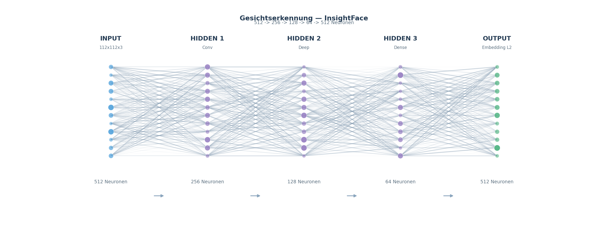

UtutCam — Gesichtserkennung (InsightFace / Colab)¶
1. Überblick¶
Die Gesichtserkennung identifiziert Personen im Kamerabild anhand ihres
Gesichts. Dafür wird ein Neuronales Netz verwendet (InsightFace
buffalo_l), das jedes Gesicht auf einen 512-dimensionalen Zahlenvektor
(Embedding) abbildet. Gleiche Personen haben ähnliche Vektoren; über einen
Kosinus-Vergleich mit der Gesichtsdatenbank wird der Name ermittelt.
Kamera-Gesicht ──► Neuronales Netz ──► Embedding (512) ──► Cosinus-Vergleich ──► "Anna" / "Unbekannt"
│
faces.json
Simulation: gesicht_simulation.mp4
(~13 s) — läuft mit echtem InsightFace auf einem echten Foto: Gesicht wird
erkannt, zum 512-dim Embedding gemacht und per Cosinus gegen die Datenbank
verglichen — bis zum Ergebnis „Erkannt / Unbekannt".
2. Die neuronale Netzwerk-Visualisierung¶
Das Herzstück — ein Neuronales Netz von der Pixel-Schicht bis zum Matching — wird in folgendem Diagramm gezeigt. Du siehst die Input-Schicht, mehrere Hidden Layers, die Embedding-Schicht (512 Neuronen) und den Cosinus-Vergleich als Ausgang.

(Quell-Grafik als SVG: gesichts_netzwerk.svg — Plus einfaches MLP-Beispiel: mlp_beispiel.png.)
{kind=link}
{kind=link}
Die Grafik wird automatisch erzeugt — aus einer einfachen Layer-Definition per generischem Visualisierer (siehe unten). Jeder Kreis ist ein Neuron, jede Linie eine Gewichts-Verbindung der Stärke nach Liniendicke; die Neuronengröße zeigt optional die Aktivierung.
Kurz erklärt:
- INPUT — Gesichts-Crop (112×112×3, RGB) aus dem Kamerabild.
- HIDDEN 1 (Conv-Features) — Faltungsschicht, lernt Kanten und Konturen.
- HIDDEN 2 (Deep Features) — tiefe Netz-Blöcke, filtern Gesichtsmerkmale (Augen, Nase, Mund, Struktur).
- HIDDEN 3 (Dense) — dichte Schicht, fasst alle Merkmale zusammen.
- EMBEDDING (512) — das Gesicht wird auf einen 512-dimensionalen Vektor reduziert, der L2-normalisiert wird (Länge = 1).
- COSINE-VERGLEICH (Output) — das Embedding der Kamera wird mit jedem Embedding in der Datenbank verglichen. Der Kosinus-Score beantwortet: „Wie ähnlich?“ Score ≥ 0.40 → Person erkannt, sonst „Unbekannt“.
3. Startbefehle¶
Alle Skripte laufen vom Projektstamm
C:\Users\youss\Desktop\UtutCamaus.
3.1 Proxy-App „Person hinzufügen“ (Webcam)¶
cd C:\Users\youss\Desktop\UtutCam
C:\Users\youss\AppData\Local\Python\pythoncore-3.14-64\python.exe apps\face_recognition_app.py
# Nur eine Person ohne Live-Fenster hinzufügen:
C:\Users\youss\AppData\Local\Python\pythoncore-3.14-64\python.exe apps\face_recognition_app.py --add "Max Mustermann"
# Ohne Anzeige-Window starten:
C:\Users\youss\AppData\Local\Python\pythoncore-3.14-64\python.exe apps\face_recognition_app.py --add-only
q beendet das Live-Fenster.
3.2 Face Manager (Datenbank verwalten, Thumbnail-Raster)¶
Personen hinzufügen/löschen über das Tkinter-Raster.
3.3 Gesichtserkennung im Web (via Web-App)¶
Dann im Browser http://localhost:5000 → Seite Gesicht_erkennung (Serverlog
zeigt den Port). Der GesichtWorker läuft dauerhaft im Hintergrund und meldet
Treffer.
4. Wie es funktioniert¶
4.1 Embedding erzeugen (Kern-Funktion)¶
Die Datei face_erkennung/face_database.py stellt die komplette API bereit:
from face_erkennung.face_database import get_app, add_person, recognize_face, load_db
app = get_app() # InsightFace buffalo_l laden (CPU)
faces = app.get(img) # Gesichter im Bild erkennen
emb = faces[0].normed_embedding # 512-dim Embedding
| Funktion | Beschreibung |
|---|---|
get_app() |
Lädt das InsightFace-Modell buffalo_l (CPU, det_size 640×640) |
add_person(name, image_path, tolerance=0.4) |
Erkennt Gesicht unter, prüft auf Duplikate und speichert Embedding in DB |
recognize_face(embedding, db, threshold=0.4) |
Misst die höchste Kosinus-Ähnlichkeit gegen alle DB-Einträge |
load_db() / save_db(db) |
Gesichtsdatenbank data/face_db/faces.json |
list_persons() |
Zeigt alle Namen mit Anzahl der Embeddings |
Datenbank: data/face_db/faces.json speichert pro Person eine Liste von
Embeddings (Referenz-Messungen) + Bildpfad.
4.2 Matchen (Cosinus)¶
score = np.dot(embedding, db_embedding) # Kosinus-Ähnlichkeit (L2-normiert)
if score >= MATCH_THRESHOLD (0.40): name = "Anna"
else: name = None # "Unbekannt"
Gleiche Person (gleiches Gesicht) erzeugt fast das gleiche Embedding (Score ≈ 0.6–0.9). Andere Personen liegen meist weit unter 0.4.
4.3 Schwellenwerte¶
| Konstante | Wert | wo |
|---|---|---|
MATCH_THRESHOLD |
0.40 |
Gesichtserkennung (Datenbank) |
MATCH_THRESHOLD |
0.35 |
Fahndung (strenger → lieber Alarm) |
EMB_DIM |
512 |
Dimension eines Embeddings |
5. Ausbildung / Google Colab¶
Die Gesichts-Embeddings werden auf Google Colab mit InsightFace-Modellen vorberechnet:
- Colab-Notebooks: unter
colab/(build_ututcam_notebook.py,build_ututcam_notebook_v2.py) — trainieren bzw. verwenden dieUtut*-Modelle und erzeugen die Datenbanken/Embeddings. - Der Buffalo-L-Backbone (SCRFD + ResNet) wird von InsightFace als
vorab-trainiertes Modell bereitgestellt und über
face_erkennung/fahndunglokal geladen. - Auf Colab wurden große Bildlisten (z.B. Fahndungs-Galerie) verarbeitet und die 512-dim Embeddings gespeichert — lokal läuft dann nur noch der schnelle Vergleich.
6. Integrierte Nutzung¶
Die Gesichtserkennung ist in mehreren Modulen eingebaut:
| Modul | Was es mit Gesichtern macht |
|---|---|
dieb_erkennung/detector.py |
Bei Dieb-Verdacht Gesicht des Verdächtigen in der DB suchen + Name melden |
fahndung/fahndung_downloader.py |
Fahndungsfotos → Embeddings → Live-Match (Schwelle 0.35) |
web_app/server.py |
GesichtWorker (Thread) + Face-Manager-Seite im Browser |
messer_erkennung/UtutCam.py |
Live-Pipeline prüft Gesicht (FACE_EVERY=6 Frames) + Fahndung |
relay/relay_client.py |
Melden erkannte Person/Fahndung per Telegram |
7. FAQ¶
| Frage | Antwort |
|---|---|
| Wo liegen die gespeicherten Personen? | data/face_db/faces.json (+ Fotos in data/face_db/photos) |
| Wie genau ist die Erkennung? | Sehr gut bei frontalem Licht; Brillen/Schatten senken den Score |
| Warum 512 Zahlen? | Kompakt + schnell vergleichbar; Standard von InsightFace |
| Läuft alles offline? | Ja, Modell & DB sind lokal; nur die Fahndung holt neue Daten vom Web |
8. Verwandte Dateien¶
face_erkennung/face_database.py— Kern-API (Embedding, Matchen, DB)apps/face_recognition_app.py— Webcam-Hinzufügenapps/face_manager_app.py— Datenbank-Verwaltungdata/face_db/faces.json— Gesichtsdatenbankdocs/bilder/gesichts_netzwerk.svg/.png— Netzwerk-Visualisierung